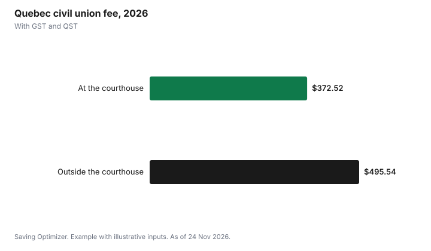

Weddings · Canada
Quebec Civil Unions: A Canadian Cost Guide

A Quebec civil union costs $324 plus taxes when a court clerk performs it at the courthouse, or a municipal officiant at city hall, and $431 plus taxes anywhere else (2026 fees). That's the same fee as a civil marriage. A civil union gives you largely the same rights and obligations as marriage in Quebec, and it can be easier to end.
Key takeaways
- 2026 fees: $324 plus taxes at the courthouse or city hall; $431 plus taxes elsewhere (checked 24 Nov 2026).
- The fees are indexed every 1 January, and municipalities can charge less.
- A notice is published 20 days before the ceremony unless you get a dispensation.
- Civil spouses get largely the same protections as married spouses; de facto spouses don't.
- Without common children, a civil union can end by a joint declaration before a notary.
Fees
| Where and who | Fee | With GST and QST |
|---|---|---|
| Courthouse, by the court clerk | $324 | $372.52 |
| City hall, by the mayor or a municipal officiant | Up to $324 | Up to $372.52 |
| Outside the courthouse, by the clerk | $431 | $495.54 |
| Outside city hall, by a municipal officiant | Up to $431 | Up to $495.54 |
Tax column: GST at 5% plus QST at 9.975%. Notaries and other authorised officiants set their own fees, so ask for a quote.

Civil union, marriage or de facto union
- Civil union: open to two people 18 or older; family patrimony and most marriage rules apply.
- Marriage: the same protections; ending it needs a divorce under federal law.
- De facto union (living together): no family patrimony or support between spouses under the marriage rules. Since 30 June 2025, de facto spouses who have a child together on or after that date are in a parental union, with its own, narrower patrimony rules. A cohabitation agreement helps.
Steps
- Choose an officiant and book a date.
- Have the notice of publication posted 20 days before, or apply for a dispensation.
- Bring two witnesses and your ID.
- After the ceremony, the officiant sends the declaration to the Directeur de l'état civil. Order a certificate if you need one.
Ending a civil union
A court can dissolve a civil union. If you have no common children and agree on all the effects, you can instead sign a joint declaration before a notary, which is usually quicker and cheaper than a divorce.
Compare costs elsewhere in marriage licence fees by province and city hall and courthouse weddings.
Sources
- Gouvernement du Québec, Tariff of Court Costs: Civil marriage and civil union (2026), checked 24 Nov 2026.
- Légis Québec, T-16, r. 10, s. 25 (in force 10 Jan 2026), checked 24 Nov 2026.
- Gouvernement du Québec, Administrative fee for a civil union, checked 24 Nov 2026.
- Gouvernement du Québec, Parental union (de facto spouses with a common child born on or after 30 June 2025), checked 24 Nov 2026.
Frequently asked questions
How much does a civil union cost in Quebec?
In 2026, $324 plus taxes at the courthouse or city hall, and $431 plus taxes elsewhere, when performed by a court clerk or municipal officiant.
Is a civil union the same as marriage in Quebec?
Largely. Civil spouses share most of the same rights and obligations, including family patrimony.
Is a civil union the same as a common-law (de facto) union?
No. De facto spouses don't get the marriage rules. Since 30 June 2025, those who have a child together form a parental union with narrower protections.
How long before the ceremony is the notice published?
20 days, unless a dispensation is granted.
How do you end a civil union?
Through a court, or, if there are no common children and all effects are settled, by a joint declaration before a notary.
Researched and drafted with AI assistance and fact-checked against official Canadian sources. How we create content.
Note: Fees from Quebec's 2026 tariff. Not legal advice. Education only.